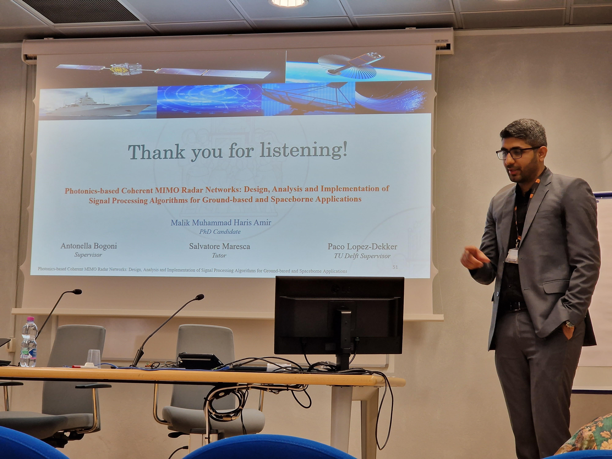

About Me
Hello, my name is Haris Amir and I am a radar signal processing engineer who is passionate about driving innovation in the
operation and management of radar systems. I am originally from Pakistan and have recently completed my PhD from Sant'Anna School of Advanced
Studies in Pisa, Italy. I am currently working as a Researcher in the same lab.
My current research focuses on using advanced signal processing algorithms for the development of next generation MIMO radar systems assisted by Photonics.
I am specifically working on developing signal processing algorithms for radar systems and to collaborate with the teams that are working on microwave photonics
systems and integratrated photonics for the realization of next generation of radar systems on integrated photonics chips. By realizing these radar systems, I believe we will
be able to enhance the performance of radar systems in terms of range-resolution, and azimuth resolution, which has a huge potential in civilian applications especially Autonomus Driving.
When I am not doing research, you can find me exploring new places and cultures. I am particualarly fond of outdoor activities, such as hiking, trekking, cycling. I also love to travel to different places and explore the
world. I am also an avid reader of a non-ficional historical and philosophical literature, always seeking fresh prospective and insights.
Education
PhD in Emerging Digital Technologies
Scuola Superiore Sant'Anna, Pisa, Italy
10/2020 - 02/2024
Thesis Title:Photonics‑based Coherent MIMO Radar Networks: Design, Analysis, and Implementation of Signal Algorithms for Ground‑based and Spaceborne Applications
Erasmus Mundus Joint Master Degree (EMJMD) in Photonic Integrated Circuits, Sensors, and Networks,
Aston University (UK), Osaka University (JAPAN), Scuola Superiore Sant'Anna (ITALY)
09/2018 - 08/2020
Thesis Title: Target RCS Modelling and Detection Performance Analysis of
Photonics‑based Coherent MIMO Radar Networks
Major Subjects: Modelling and Characterization of Fiber Photonics Devices, Analysis
of Nonlinearities in Optical Fiber
Communication Systems, Microwave Photonics, Machine Learning
Master in Electrical Engineering (RF & Microwave)
National University of Sciences and Technology (NUST), Pakistan
09/2015 - 08/2017
Thesis Title: Sensitivity Analysis for Different Orientations of Split Cylinder Resonator
Major Subjects: Electromagnetics, Semiconductors, Microwaves, Photonics, Antennas
Bachelor in Electrical Engineering (Electronics)
Air University, Islamabad, Pakistan
09/2010 - 08/2014
Major Subjects: Digital Signal Processing, Electromagnetics, ElectronicsWork Experience
Researcher, Scuola Superiore Sant'Anna, Pisa, Italy
01/2024 - Present
- Design and development of Signal Processing Algorithms for coherent MIMO radar networks mounted on top of drones.
- Working on the development of a target detection algorithm based on the Constant False Alarm Rate (CFAR) criterion in a distributed drone scenario.
- Working on target-tracking algorithms using Kalman Filters, Particle Filters, and Track-before-Detect Algorithms.
- Working on Imaging of extended targets with multiple scatterers from Distributed MIMO Radar mounted on drones.
- Study and Development of different machine learning techniques for the RCS estimation of extended targets.
- Working on design and development of signal processing algorithms for distributed MIMO SAR systems for high resolution-imaging of the ocean surface.
PhD Candidate, Scuola Superiore Sant'Anna, Pisa, Italy
10/2020 - 12/2023
- Worked on Modelling of Extended Targets for different close‑to‑reality maritime scenarios, i.e., shore‑based and shipborne MIMO radars.
- Identification of Key Performance Indicators for design and development of coherent MIMO radar networks.
- Study and optimization of detection strategies for coherent MIMO radars i.e., CFAR detectors.
- Study and optimization of multiple target tracking strategies i.e., Filter-based tracking, Track-before-Detect.
- Study and analysis of MIMO techniques for Spaceborne Synthetic Aperture Radars for high-resolution imaging of Earth surface.
Exchanged Researcher, Delft University of Technology, Delft, Netherlands
10/2022 - 03/2023
- Worked on SwarmSAR signal processing for generating high-resolution images of Earth's surface.
- Resolving Cross-range ambiguities and improving azimuth resolution for highly decorrelating targets such as, ocean surfaces using SwarmSAR.
Publications
JOURNAL PAPERS
- Amir, M.M.H., Maresca, S., Pandey, G., Malacarne, A., Bogoni, A. and Scaffardi, M., 2023. Performance Evaluation of Photonics-Based Coherent MIMO Radar Systems for Maritime Surveillance. Inventions, 8(4), p.99.
- Reza, M., Amir, M.M.H., Imran, M., Pandey, G., Camponeschi, F., Maresca, S., Scotti, F., Serafino, G., Malacarne, A., Porzi, C. and Ghelfi, P., 2022. Multi-static multi-band synthetic aperture radar (SAR) constellation based on integrated photonic circuits. Electronics, 11(24), p.4151.
- Serafino, G., Maresca, S., Porzi, C., Scotti, F., Malacarne, A., Amir, M.M.H., Ghelfi, P. and Bogoni, A., 2022. Maritime field trial of a dual-band silicon integrated photonics-based radar. IEEE Journal of Selected Topics in Quantum Electronics, 28(5), pp.1-10.
- Pandey, G., Malacarne, A., Maresca, S., Amir, M.M.H., Bogoni. A., and Scaffardi, M., 2024. Coherent Multi-Band MIMO Radar: Robustness Analysis to SSMF-based RF Signal Delivery. Optics Letters.
CONFERENCE PAPERS
- Amir, M.M.H., Maresca, S., Serafino, G., Ghelfi, P. and Bogoni, A., 2022, April. Modelling of Extended Targets with Dual-Band MIMO Radar Networks. In 2021 18th European Radar Conference (EuRAD) (pp. 345-348). IEEE.
- Amir, M.M.H., Maresca, S., Serafino, G., Ghelfi, P. and Bogoni, A., 2021, June. Target RCS Modeling and CFAR Detection Performance with Photonics-based Distributed Multi-Band MIMO Radars. In 2021 21st International Radar Symposium (IRS) (pp. 1-9). IEEE.
- Amir, M.M.H., Xu, H., Bogoni. A., and Dekker, P.L., 2023. On high-resolution imaging of fast-decorrelating targets using a distributed ‘SwarmSAR’ architecture. In 2024 International Geoscience and Remote Sensing Symposium (IGARSS). IEEE. (Accepted)
- Maresca, S., Amir, M.M.H., Scotti, F., Scaffardi, M., Ghelfi, P., Bogoni, A., and Malacarne, A., 2024. Adaptive Beamforming Applied to Coherent MIMO Radio-over-Fiber Systems. In 2024 Radar Conference (RadarConf). IEEE.
- Fawad, A., Amir, M.M.H., Maresca, S., Malacarne, A., Bogoni, A., and Scaffardi, M., 2024. RCS Modelling of Extended Targets Using Supervised Learning. In 2024 European Radar Conference (EuRAD). IEEE. (Accepted).
- Serafino, G., Maresca, S., Amir, M.M.H., Malacarne, A., Ghelfi, P. and Bogoni, A., 2022, September. Key Performance Indicators for System Analysis of MIMO Radars with Widely Separated Antennas. In 2022 19th European Radar Conference (EuRAD) (pp. 1-4). IEEE.
- S. Maresca, A. Malacarne, M.M.H. Amir, G. Pandey, A. Bogoni and M. Scaffardi, Analysis of Adaptive Beamforming Techniques for Photonics-based Coherent MIMO Radars., 2023 IEEE International Workshop on Technologies for Defense and Security (TechDefense), Rome, Italy, 2023, pp. 7-11.
- Malacarne, A., Maresca, S., Amir, M.M.H., Pandey, G., Ghelfi, P. and Bogoni, A., 2023, September. Robustness of Photonics-based Coherent Multi-band MIMO Radar to Fiber-based Signal Distribution. In 2023 20th European Radar Conference (EuRAD). IEEE.
- Maresca, S., Scotti, F., Amir, M.M.H., Pandey, G., Malacarne, A., Bogoni, A., Scaffardi, M. and Bogoni, A., 2023, June. Analysis of Sea Clutter with a Dual-Band Photonics-based Coherent Radar Network. In OCEANS 2023-Limerick (pp. 1-8). IEEE.
- Rinaldi, L., Camponeschi, F., Amir, M.M.H., Maresca, S., Reza, M., Pandey, G., Imran, M., Scaffardi, M., and Bogoni, A., 2023. Towards System-on-Chip Integration of Photonic-based Coherent Distributed Synthetic Aperture Radar. In 2023 IEEE Photonics Conference (IPC). IEEE.
- Masreca, S., Malacarne, A., Amir, M.M.H., Ahmed, F., Pandey, G., Bogoni, A., and Scaffardi, M., 2024. Radar Detection in Coherent Multi-Sensor Multi-Frequency Systems. In 6th International Workshop on the Theory of Computational Sensing and its applications to Radar, Multimodal Sensing, and Imaging (CoSeRa 2024). (Accepted)
- Scotti, F., Porzi, C., Ghelfi, P., Falconi, F., Amir, M.M.H., Maresca, S., Borgarino, M. and Bogoni, A., 2021, November. Indoor field trial in X band of a photonics-based multiband radar on a packaged silicon chip. In 2021 International Topical Meeting on Microwave Photonics (MWP) (pp. 1-4). IEEE.
- Reza, M., Maresca, S., Scotti, F., Pandey, G., Imran, M., Serafino, G., Amir, M.M.H., Camponeschi, F., Ghelfi, P., Bogoni, A. and Scaffardi, M., 2022, October. Multi-Static Multi-Band Synthetic Aperture Radar (SAR) Constellation Based on Photonic Processing. In 2022 IEEE International Topical Meeting on Microwave Photonics (MWP) (pp. 1-4). IEEE.
- Maresca, S., Serafino, G., Malacarne, A., Scotti, F., Amir, M.M.H., Ghelfi, P. and Bogoni, A., 2022, September. Extended Target Tracking with a Photonics-Based Radar on a Packaged Silicon Chip. In 2022 23rd International Radar Symposium (IRS) (pp. 116-123). IEEE.
Research Projects
DISTRIBUTED DRONE
-
Objective: Design and development of a photonics‑based multiband MIMO Radar System mounted on top of Drones for Targets,
Detection, Size, Estimation, Tracking, and Imaging.
Contributions: Development of MIMO simulator for distributed drone-based MIMO radar system for performing target detection, tracking, and imaging in a 3D space.
COSMOS: Photonics‑based Coherent SAR Constellation for Multistatic and Multispectral Satellite Earth Observation
-
Objective: Design and development of photonics‑based multiband MIMO SAR constellation for high‑resolution observation of
Earth's Surface.
Contributions: Study of SAR signal processing algorithms, Implementation of SwarmSAR algorithm, Study and analysis of single pass SAR interferometry.
ESTIMATOR: Design Optimization of Coherent MIMO Radar Networks Enabled by Photonics
-
Objective: Design and implementation of MIMO radar signal processing chain for photonics‑based coherent multiband MIMO
radar networks.
Contributions: Development of MIMO radar simulator for simulating extended maritime scenarios, RCS modeling of extended maritime targets, MIMO radar signal processing, and Simulation of close‑to‑reality scenarios for distributed and colocated MIMO radars.
Talks

Microwave Photonics for Distributed Radar Systems
Date: 26/September/2024
Microwave Photonics for Wireless Sensing Workshop, European Microwave Week (EuMW), Paris, France
On high-resolution imaging of fast-decorrelating targets using a distributed ‘SwarmSAR’ architecture
Date: 11/July/2024
International Geoscience and Remote Sensing Symposium (IGARSS), Athens, Greece
Key Performance Indicators for System Analysis of MIMO Radars with Widely Separated Antennas
Date: 28/September/2022
19th European Radar Conference (EuRAD) Milan, Italy
Modelling of Extended Targets with Dual-Band MIMO Radar Networks
Date: 4/May/2022
18th European Radar Conference (EuRAD) London, UK
Target RCS Modeling and CFAR Detection Performance with Photonics-based Distributed Multi-Band MIMO Radars
Date: 21/June/2021
21st International Radar Symposium (IRS), Berlin, Germany
BookShelf
- Thus Spoke Zarathustra, Fredrich Nietzsche, ★★★★★
- The First and Last Freedom, Jiddu Krishnamurti, ★★★★
- The Reconstruction of Religious Thoughts in Islam, Dr. Allama Muhammad Iqbal, ★★★★★
- Sapiens, Yual Noah Harrari, ★★★★
- Homo Deus, Yual Noah Harrari, ★★★★
- 21 Lessons of 21st Century, Yual Noah Harrari, ★★★★
- Riwayat e Tamadum e Qadeem (Ancient Traditions and Civilizations), Ali Abbas Jalalpuri, ★★★★
- The Crowds, Gustave Le Bon, ★★★★
- Tuesdays with Morrie, Mitch Albom, ★★★★
- Forty Rules of Love, Elif Shafak, ★★★★
- The Alchemist, Paulo Coelho, ★★★★